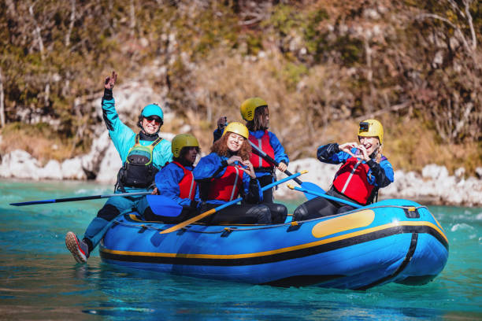

Our mission is to provide the most thrilling and safe white water rafting experiences in the region. We believe that adventure brings people together and creates lasting memories. Every trip is an opportunity to challenge yourself, connect with nature, and discover the beauty of untamed waters. Our experienced guides and modern equipment ensure that your adventure is both exciting and secure.